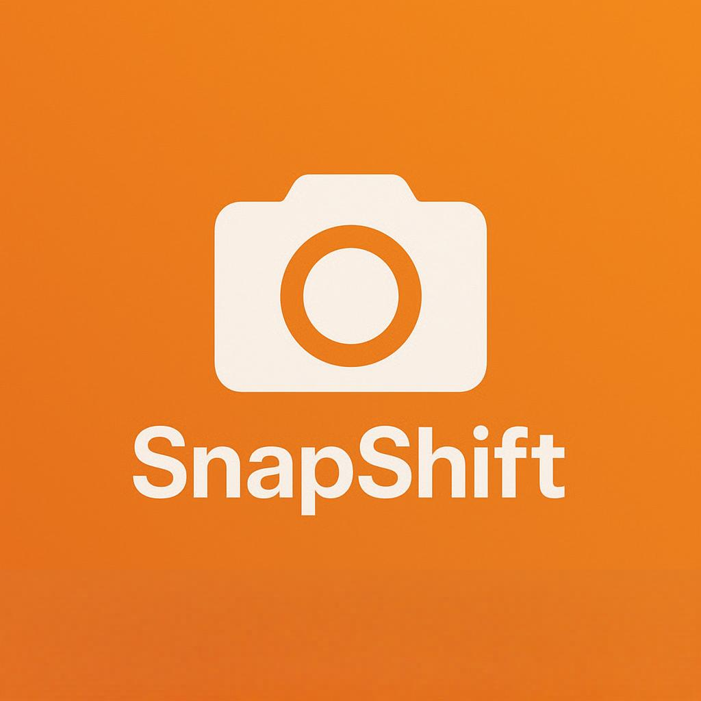

SnapShift
Team Member
Application Overview
SnapShift is a web-based image format converter designed to be intuitive and user-friendly. Users can upload an image, select a new file format (e.g., JPG to PNG), and instantly convert it with a single click. No sign-up required, no clutter—just fast and simple image conversion.
Technology Overview
- Languages: Python, HTML, CSS, JavaScript
- Libraries/Frameworks: Flask (Python), Pillow (Python Imaging Library)
- Platforms: Web (initially desktop browser focused)
- Hosting: GitHub Pages (frontend), Render.com or PythonAnywhere (backend)
Feature List (MVP)
- Drag-and-drop image upload
- Selectable output formats (JPG,PNG,PDF)
- Instant image conversion
- Downloadable converted file
Future Feature List
- Batch image conversion
- Image compression/resize tools
- Dark mode UI
- Web-based support
Basic Technical Features
- Python-based backend with Flask
- File upload handling
- Image format conversion using Pillow
- Frontend with HTML/CSS and JavaScript
- Hosting via GitHub Pages and Render/PythonAnywhere
Advanced Technical Features
- Dynamic format detection using MIME types
- Real-time UI updates with JavaScript
- Optional format-specific settings (e.g., compression level)
Proposal Last Updated: April 6, 2025